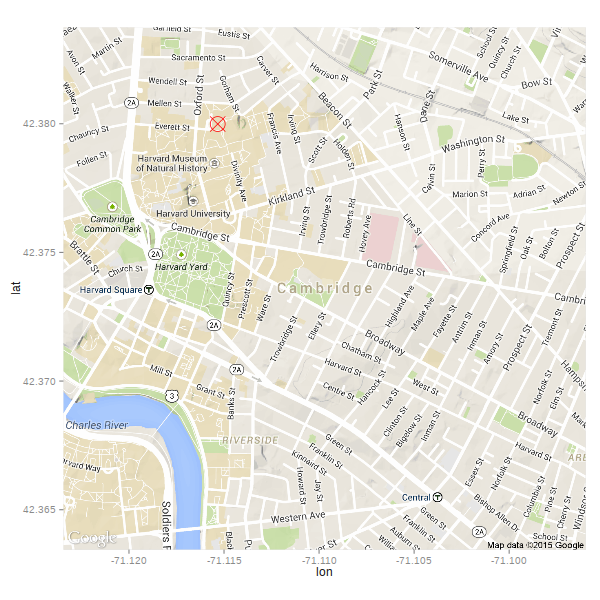
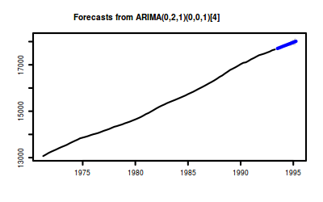
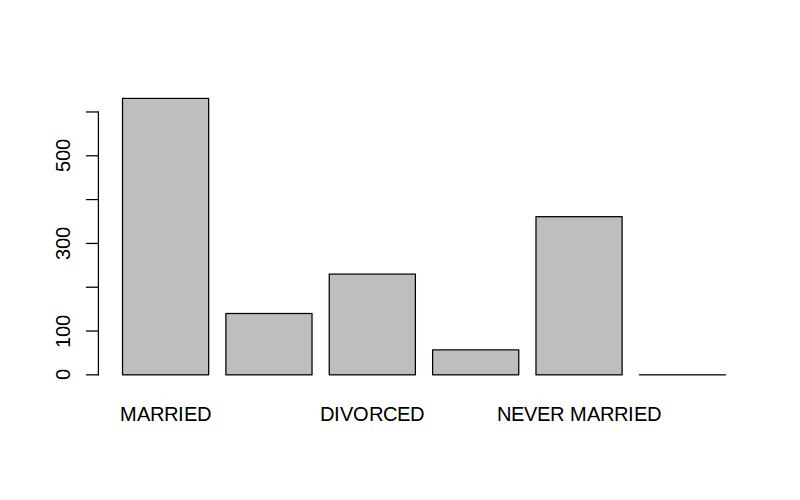
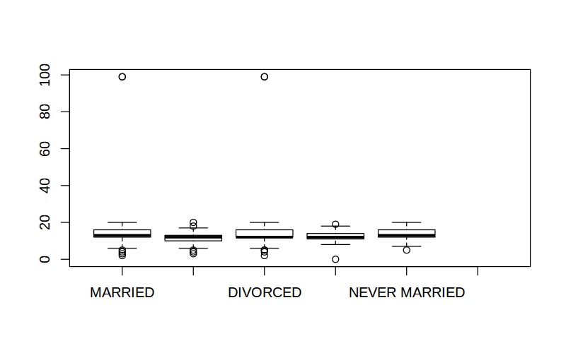
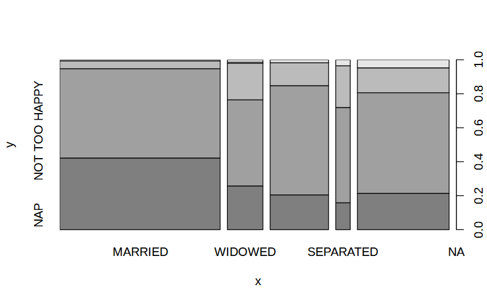

Introduction to R
Table of Contents
Workshop Materials and Introduction
Materials and setup
You should have R installed –if not:
- Open a web browser and go to http://cran.r-project.org/ and download and install it
- Also helpful to install RStudio (download from http://rstudio.com/)
Download workshop materials:
- Download materials from http://tutorials.iq.harvard.edu/R/Rintro.zip
- Extract the zip file containing the materials to your desktop
What is R?
R is a programming language designed for statistical computing. Notable characteristics include:
- Vast capabilities, wide range of statistical and graphical techniques
- Very popular in academia, growing popularity in business: http://r4stats.com/articles/popularity/
- Written primarily by statisticians
- FREE (no cost, open source)
- Excellent community support: mailing list, blogs, tutorials
- Easy to extend by writing new functions
InspiRation
OK, it's free and popular, but what makes R worth learning? In a word, "packages". If you have a data manipulation, analysis or visualization task, chances are good that there is an R package for that. For example:
- Want to interactively explore the shape of the Churyumov–Gerasimenko comet?
library(rgl) open3d() comet <- readOBJ(url("http://sci.esa.int/science-e/www/object/doc.cfm?fobjectid=54726")) shade3d(comet, col="gray") writeWebGL(dir="images", filename = "images/comet.html")
- Want to find out where we are?
library(ggmap) nwbuilding <- geocode("1737 Cambridge Street Cambridge, MA 02138", source = "google") ggmap(get_map("Cambridge, MA", zoom = 15)) + geom_point(data=nwbuilding, size = 7, shape = 13, color = "red")

- Want to forecast the population of Australia?
library(forecast) fit <- auto.arima(austres) ## Projected numbers (in thousands) of Australian residents plot(forecast(fit))

Whatever you're trying to do, you're probably not the first to try doing it R. Chances are good that someone has already written a package for that.
Graphical User Interfaces (GUIs)
R GUI alternatives
The old-school way is to run R directly in a terminal

But hardly anybody does it that way anymore! The Windows versio of R comes with a GUI that looks like this:

The default windows GUI is not very good
- No parentheses matching or syntax highlighting
- No work-space browser
RStudio (an alternative GUI for R) is shown below.

Rstudio has many useful features, including parentheses matching and auto-completion. Rstudio is not the only advanced R interface; other alteratives include Emacs with ESS (shown below).

Emacs + ESS is a very powerful combination, but can be difficult to set up.

Jupyter is a notebook interface that runs in your web browser. A lot of people like it.
Launch RStudio labsetup
- Open the RStudio program
- Open up today's R script
- In RStudio, Go to File => Open Script
- Locate and open the
Rintro.Rscript in the Rintro folder on your desktop
- Go to Tools => Set working directory => To source file location (more on the working directory later)
- I encourage you to add your own notes to this file! Every line that starts with
#is a comment that will be ignored by R. My comments all start with##; you can add your own, possibly using#or###to distinguish your comments from mine.
Exercise 0
The purpose of this exercise is mostly to give you an opportunity to explore the interface provided by RStudio (or whichever GUI you've decided to use). You may not know how to do these things; that's fine! This is an opportunity to learn. If you don't know how to do something you can can use internet search engines, search on StackOverflow, or ask the person next to you.
Also keep in mind that we are living in a golden age of tab completion. If you don't know the name of an R function, try guessing the first two or three letters and pressing TAB. If you guessed correctly the function you are looking for should appear in a pop up!
- Try to get R to add 2 plus 2.
- Try to calculate the square root of 10.
- There is an R package named
car(Companion to Applied Regression). Try to install this package. - R includes extensive documentation, including a file named "An introduction to R". Try to find this help file.
- Go to http://cran.r-project.org/web/views/ and skim the topic closest to your field/interests.
Data and Functions
Assignment
Values can be assigned names and used in subsequent operations
- The
<-operator (less than followed by a dash) is used to save values - The name on the left gets the value on the right.
x <- 10 # Assign the value 10 to a variable named x x + 1 # Add 1 to x y <- x + 1 # Assign y the value x + 1 y
> x <- 10 # Assign the value 10 to a variable named x > x + 1 # Add 1 to x [1] 11 > y <- x + 1 # Assign y the value x + 1 > y [1] 11 >
Saved variables can be listed, overwritten and deleted
ls() # List variables in workspace x # Print the value of x x <- 100 # Overwrite x. Note that no warning is given! x rm(x) # Delete x ls()
> ls() # List variables in workspace [1] "comet" "fit" "x" "y" > x # Print the value of x [1] 10 > x <- 100 # Overwrite x. Note that no warning is given! > x [1] 100 > rm(x) # Delete x > ls() [1] "comet" "fit" "y" >
Functions
Using R is mostly about applying functions to variables. Functions
- take variable(s) as input argument(s)
- perform operations
- return values which can be assigned
- optionally perform side-effects such as writing a file to disk or opening a graphics window
The general form for calling R functions is
FunctionName(arg.1, arg.2, ... arg.n)
Arguments can be matched by position or name
Examples:
#?sqrt a <- sqrt(y) # Call the sqrt function with argument x=y round(a, digits = 2) # Call round() with arguments x=x and digits=2 # Functions can be nested so an alternative is round(sqrt(y), digits = 5) # Take sqrt of a and round
> #?sqrt > a <- sqrt(y) # Call the sqrt function with argument x=y > round(a, digits = 2) # Call round() with arguments x=x and digits=2 [1] 3.32 > # Functions can be nested so an alternative is > round(sqrt(y), digits = 5) # Take sqrt of a and round [1] 3.31662 >
R packages
There are thousands of R packages that extend R's capabilities.
- To see what packages are loaded:
search()
- To view available packages:
library()
- To load a package:
library("car")
- Install new package:
install.packages("stringdist")
Getting data into R
The gss dataset
The next few examples use a subset of the General Social Survey data set. The variables in this subset include those described below.
| var | description | |---------+----------------------------------| | marital | marital status | | age | age of respondent | | educ | highest year of school completed | | sex | respondents sex | | inc | respondents income | | happy | general happiness | | region | |
The "working directory" and listing files
R knows the directory it was started in, and refers to this as the "working directory". Since our workshop examples are in the Rintro folder on the desktop, we should all take a moment to set that as our working directory:
setwd("~/Desktop/Rintro")
We can also set the working directory using paths relative to the current working directory:
getwd() # get the current working directory setwd("dataSets") # set wd to the dataSets folder getwd() setwd("..") # set wd to enclosing folder ("up")
> getwd() # get the current working directory
[1] "/home/izahn/Documents/Work/IQSS/Classes/IQSS_Stats_Workshops/R/Rintro"
> setwd("dataSets") # set wd to the dataSets folder
> getwd()
[1] "/home/izahn/Documents/Work/IQSS/Classes/IQSS_Stats_Workshops/R/Rintro/dataSets"
> setwd("..") # set wd to enclosing folder ("up")
>
It can be convenient to list files in a directory without leaving R
list.files("dataSets") # list files in the dataSets folder # list.files("dataSets", pattern = ".csv") # restrict to .csv files
> list.files("dataSets") # list files in the dataSets folder
[1] "gss.csv" "gss.dta" "gssInfo.csv" "gss.rds"
[5] "gss.sas7bdat" "gss.sav" "gss.xlsx"
> # list.files("dataSets", pattern = ".csv") # restrict to .csv files
>
Importing data from files the easy way
In order to read data from a file, you usually have to know what kind of file it is. The table below lists some common data types.
| Common data types |
|---|
| comma separated (.csv) |
| Stata (.dta) |
| SPSS (.sav) |
| SAS (.sas7bdat) |
| Excel (.xls, .xlsx) |
R is smart enough to recognize most common file formats for us using the import() function. To use this functionality we first need to install and attache the rio package.
## install and load the rio package # install.packages("rio") library(rio) ## import data from a variety of formats # read gss data from the gss.rds R file datGSS <- import("dataSets/gss.rds") # read gss data from the gss.csv comma separated file gss.data <- import("dataSets/gss.csv") # read a Stata dataset from gss.dta datGSS <- import("dataSets/gss.dta")
> ## install and load the rio package
> # install.packages("rio")
> library(rio)
> ## import data from a variety of formats
> # read gss data from the gss.rds R file
> datGSS <- import("dataSets/gss.rds")
> # read gss data from the gss.csv comma separated file
> gss.data <- import("dataSets/gss.csv")
> # read a Stata dataset from gss.dta
> datGSS <- import("dataSets/gss.dta")
>
Importing data from files the hard way
In order to read data from a file, you have to know what kind of file it is. The table below lists the functions needed to import data from common file formats.
| data type | function | package |
|---|---|---|
| comma separated (.csv) | read.csv() | utils (default) |
| other delimited formats | read.table() | utils (default) |
| Stata version 7-12 (.dta) | read.dta() | foreign |
| Stata version 13-14 (.dta) | readdta() | haven |
| SPSS (.sav) | read.spss() | foreign |
| SAS (.sas7bdat) | read.sas7bdat() | sas7bdat |
| Excel (.xls, .xlsx) | readWorksheetFromFile() | XLConnect |
Examples:
# read gss data from the gss.rds R file datGSS <- readRDS("dataSets/gss.rds") # read gss data from the gss.csv comma separated file gss.data <- read.csv("dataSets/gss.csv") # read gss data # read a Stata dataset from gss.dta library(foreign) # load foreign data functions datGSS <- read.dta(file="dataSets/gss.dta")
> # read gss data from the gss.rds R file
> datGSS <- readRDS("dataSets/gss.rds")
> # read gss data from the gss.csv comma separated file
> gss.data <- read.csv("dataSets/gss.csv") # read gss data
> # read a Stata dataset from gss.dta
> library(foreign) # load foreign data functions
> datGSS <- read.dta(file="dataSets/gss.dta")
>
Checking imported data
Always a good idea to examine the imported data set–usually we want the results to be a data.frame
class(datGSS) # check to see that test is what we expect it to be dim(datGSS) # how many rows and columns? names(datGSS) # or colnames(datGSS) str(datGSS[1:10]) # more details about the first 10 columns
> class(datGSS) # check to see that test is what we expect it to be [1] "data.frame" > dim(datGSS) # how many rows and columns? [1] 1419 35 > names(datGSS) # or colnames(datGSS) [1] "age" "educ" "emailhrs" "hrs1" "sex" "usecomp" [7] "usemail" "useweb" "webhrs" "hapmar" "happy" "speduc" [13] "rincome" "income" "marital" "postlife" "pres96" "richwork" [19] "satjob" "sibs" "spdeg" "spwrksta" "vote96" "wrkstat" [25] "zodiac" "incomdol" "rincdol" "husbeduc" "wifeduc" "husbhr" [31] "wifehr" "husbft" "wifeft" "wkftwife" "wkfthusb" > str(datGSS[1:10]) # more details about the first 10 columns 'data.frame': 1419 obs. of 10 variables: $ age : num 69 27 19 21 19 87 42 19 78 70 ... $ educ : num 12 10 11 9 11 8 11 11 7 9 ... $ emailhrs: num -1 -1 0 -1 50 -1 3 -1 -1 -1 ... $ hrs1 : num -1 60 32 20 -1 -1 -1 -1 -1 22 ... $ sex : Factor w/ 2 levels "Male","Female": 1 1 1 1 1 2 1 2 2 2 ... $ usecomp : Factor w/ 3 levels "No","Yes","No answer": 1 1 2 1 2 1 2 2 1 1 ... $ usemail : Factor w/ 3 levels "No","Yes","No answer": 1 1 1 1 2 1 2 1 1 1 ... $ useweb : Factor w/ 3 levels "No","Yes","No answer": 1 1 2 1 2 1 1 1 1 1 ... $ webhrs : num -1 -1 36 -1 20 -1 0 -1 -1 -1 ... $ hapmar : Factor w/ 6 levels "NAP","VERY HAPPY",..: 1 2 1 1 1 1 2 1 1 1 ... >
Saving and loading R workspaces
In addition to importing individual datasets, R can save and load entire workspaces
- Save our entire workspace
ls() # list objects in our workspace save.image(file="myWorkspace.RData") # save workspace rm(list=ls()) # remove all objects from our workspace ls() # list stored objects to make sure they are deleted
> ls() # list objects in our workspace [1] "a" "comet" "datGSS" "fit" "gss.data" "y" > save.image(file="myWorkspace.RData") # save workspace > rm(list=ls()) # remove all objects from our workspace > ls() # list stored objects to make sure they are deleted character(0) >
- Load the "myWorkspace.RData" file and check that it is restored
load("myWorkspace.RData") # load myWorkspace.RData ls() # list objects
> load("myWorkspace.RData") # load myWorkspace.RData
> ls() # list objects
[1] "a" "comet" "datGSS" "fit" "gss.data" "y"
>
When you close R you will be asked if you want to save your workspace – if you choose yes then your workspace will be restored next time you start R
Exercise 1
- Install and attach the
riopackage if you haven't already done so - Read the SPSS data set in dataSets/gss.sav and assign the result to an R data object named GSS.sav
- Make sure that the data loaded in step 2 is a data.frame
- Display the dimensions of the GSS.sav
- BONUS: figure out how to read the Excel file "gss.xlsx" into R
Asking R for help
R has extensive built-in documentation that can be accessed through R commands or through the GUI.
- Start html help, search/browse using web browser
- at the R console:
help.start()
- or use the help menu from you GUI
- Look up the documentation for a function
help(plot)
?kmeans
- Look up documentation for a package
help(package="stats")
- Search documentation from R (not always the best way… google often works better)
help.search("classification")
Data Manipulation
data.frame objects
- Usually data read into R will be stored as a data.frame
- A data.frame is a list of vectors of equal length
- Each vector in the list forms a column
- Each column can be a differnt type of vector
- Often the columns are variables and the rows are observations
- A data.frame has two dimensions corresponding the number of rows and the number of columns (in that order)
Extracting subsets of data.frames
You can extract subsets of data.frames using the subset() function1. Use the select argument to select columns:
# selecting specifig columns head(# first n rows subset(datGSS, select = 1:4 # column 1 to 5 ), n = 10# show first 10 rows )
and the subset argument to select rows:
subset(datGSS,
# rows where age > 90
subset = age > 90,
## sex and age columns
select = c("sex", "age"))
## the $ operator can be used to extract a single column
str(datGSS$age)
> subset(datGSS,
+ # rows where age > 90
+ subset = age > 90,
+ ## sex and age columns
+ select = c("sex", "age"))
sex age
315 Female 99
665 Male 99
>
> ## the $ operator can be used to extract a single column
> str(datGSS$age)
num [1:1419] 69 27 19 21 19 87 42 19 78 70 ...
>
> # selecting specifig columns > head(# first n rows + subset(datGSS, + select = 1:4 # column 1 to 5 + ), + n = 10# show first 10 rows + ) age educ emailhrs hrs1 1 69 12 -1 -1 2 27 10 -1 60 3 19 11 0 32 4 21 9 -1 20 5 19 11 50 -1 6 87 8 -1 -1 7 42 11 3 -1 8 19 11 -1 -1 9 78 7 -1 -1 10 70 9 -1 22 >
In the previous example we used > to select rows where age was greater than 90. Other relational and logical operators are listed below.
| Operator | Meaning |
|---|---|
| == | equal to |
| != | not equal to |
| > | greater than |
| >= | greater than or equal to |
| < | less than |
| <= | less than or equal to |
| & | and |
| | | or |
Transforming data.frames
You can modify data.frames using the transform() function.
# creating new variable mean centered age datGSS <- transform(datGSS, ageC = age - mean(age)) #education difference between wifes and husbands datGSS <- transform(datGSS, educ.diff = wifeduc - husbeduc) datGSS$wifeduc_comp <- ifelse( is.na(datGSS$wifeduc), #condition mean(datGSS$wifeduc, na.rm=TRUE), # value if condition met datGSS$wifeduc) # value otherwise ## examine our newly created variables head(subset(datGSS, select = c("age", "ageC", "wifeduc", "wifeduc_comp", "husbeduc", "educ.diff")), n = 8)
> # creating new variable mean centered age
> datGSS <- transform(datGSS,
+ ageC = age - mean(age))
>
> #education difference between wifes and husbands
> datGSS <- transform(datGSS,
+ educ.diff = wifeduc - husbeduc)
>
> datGSS$wifeduc_comp <- ifelse(
+ is.na(datGSS$wifeduc), #condition
+ mean(datGSS$wifeduc, na.rm=TRUE), # value if condition met
+ datGSS$wifeduc) # value otherwise
>
> ## examine our newly created variables
> head(subset(datGSS,
+ select = c("age", "ageC", "wifeduc", "wifeduc_comp",
+ "husbeduc", "educ.diff")), n = 8)
age ageC wifeduc wifeduc_comp husbeduc educ.diff
1 69 22.363636 NA 13.28457 NA NA
2 27 -19.636364 13 13.00000 10 3
3 19 -27.636364 NA 13.28457 NA NA
4 21 -25.636364 NA 13.28457 NA NA
5 19 -27.636364 NA 13.28457 NA NA
6 87 40.363636 NA 13.28457 NA NA
7 42 -4.636364 10 10.00000 11 -1
8 19 -27.636364 NA 13.28457 NA NA
>
Note that transform is a convenience function; see ?Extract for a more powerful way to modify data.frames.
Exporting Data
Now that we have made some changes to our GSS data set, we might want to save those changes to a file. Everything we have done so far has only modified the data in R; the files have remained unchanged.
# write data to a .csv file write.csv(datGSS, file = "gss.csv") # write data to a Stata file write.dta(datGSS, file = "gss.dta") # write data to an R file saveRDS(datGSS, file = "gss.rds")
> # write data to a .csv file > write.csv(datGSS, file = "gss.csv") > # write data to a Stata file > write.dta(datGSS, file = "gss.dta") > # write data to an R file > saveRDS(datGSS, file = "gss.rds") >
Exercise 2: Data manipulation
Use the gss.rds data set
- Generate the following variables:
- "rich" equal to 0 if rincdol is less than 100000, and 1 otherwise
- "sinc" equal to incomdol - rincdol
- Create a subset of the data containing only rows where "usecomp" = "Yes"
- Examine the data.frame created in step 2, and answer the following questions:
- How many rows does it have?
- How many columns does it have?
- What is the class of the "satjob" variable?
- BONUS (hard): Generate a variable named "dual.earn" equal to 1 if both wkftwife = 1 and wkfthusb = 1, and zero otherwise
Basic Statistics and Graphs
Basic statistics
Descriptive statistics of single variables are straightforward:
mean(datGSS$educ) # calculate mean value of education sd(datGSS$educ) # calculate standard deviation of x # calculate min, max, quantiles, mean of educ, age, and ageC summary(subset(datGSS, select = c("educ", "age", "ageC")))
> mean(datGSS$educ) # calculate mean value of education
[1] 13.47498
> sd(datGSS$educ) # calculate standard deviation of x
[1] 5.389476
> # calculate min, max, quantiles, mean of educ, age, and ageC
> summary(subset(datGSS, select = c("educ", "age", "ageC")))
educ age ageC
Min. : 0.00 Min. :18.00 Min. :-28.636
1st Qu.:12.00 1st Qu.:32.00 1st Qu.:-14.636
Median :13.00 Median :44.00 Median : -2.636
Mean :13.47 Mean :46.64 Mean : 0.000
3rd Qu.:16.00 3rd Qu.:59.00 3rd Qu.: 12.364
Max. :99.00 Max. :99.00 Max. : 52.364
>
Some of these functions (e.g., summary) will also work with data.frames and other types of objects, others (such as sd) will not.
Counts and proportions
Start by using the table() function to tabulate counts, then perform additional computations if needed
sex.counts <- table(datGSS$sex) # tabulate sex categories sex.counts prop.table(sex.counts) # convert to proportions
> sex.counts <- table(datGSS$sex) # tabulate sex categories
> sex.counts
Male Female
622 797
> prop.table(sex.counts) # convert to proportions
Male Female
0.4383369 0.5616631
>
Add variables for crosstabs
table(subset(datGSS, select = c("sex", "happy"))) # crosstab marital X happy
> table(subset(datGSS, select = c("sex", "happy"))) # crosstab marital X happy
happy
sex NAP VERY HAPPY PRETTY HAPPY NOT TOO HAPPY DK NA
Male 0 189 350 73 0 10
Female 0 246 447 84 1 19
>
Statistics by classification factors
The by() function can be used to perform a calculation separately for each level of a classifying variable
by(subset(datGSS, select = c("income", "educ")), INDICES=datGSS["sex"], FUN=summary)
> by(subset(datGSS, select = c("income", "educ")),
+ INDICES=datGSS["sex"],
+ FUN=summary)
sex: Male
income educ
$40000 TO 49999: 59 Min. : 4.00
$50000 TO 59999: 56 1st Qu.:12.00
$60000 TO 74999: 49 Median :13.00
$35000 TO 39999: 48 Mean :13.68
REFUSED : 48 3rd Qu.:16.00
$110000 OR OVER: 43 Max. :99.00
(Other) :319
----------------------------------------------------
sex: Female
income educ
REFUSED : 76 Min. : 0.00
$60000 TO 74999: 62 1st Qu.:12.00
$40000 TO 49999: 60 Median :12.00
$50000 TO 59999: 52 Mean :13.32
$30000 TO 34999: 49 3rd Qu.:15.00
$25000 TO 29999: 42 Max. :99.00
(Other) :456
>
Correlations
Let's look at correlations among between age, income, and education
cor(subset(datGSS, select = c("age", "incomdol", "educ")))
> cor(subset(datGSS, select = c("age", "incomdol", "educ")))
age incomdol educ
age 1.00000000 -0.1186564 -0.07362454
incomdol -0.11865641 1.0000000 0.21013267
educ -0.07362454 0.2101327 1.00000000
>
For significance tests, use cor.test()
with(datGSS,
cor.test(age, educ))
> with(datGSS,
+ cor.test(age, educ))
Pearson's product-moment correlation
data: age and educ
t = -2.779, df = 1417, p-value = 0.005525
alternative hypothesis: true correlation is not equal to 0
95 percent confidence interval:
-0.12518333 -0.02166916
sample estimates:
cor
-0.07362454
>
Multiple regression
Modeling functions generally use the formula interface whith DV on left followed by "~" followed by predictors–for details see
help("formula")
- Predict the number of hours individuals spend on email (emailhrs)
m1 <- lm(educ ~ sex + age, data = datGSS)
summary(m1)
> m1 <- lm(educ ~ sex + age, data = datGSS)
> summary(m1)
Call:
lm(formula = educ ~ sex + age, data = datGSS)
Residuals:
Min 1Q Median 3Q Max
-13.434 -1.785 -0.688 1.955 86.049
Coefficients:
Estimate Std. Error t value Pr(>|t|)
(Intercept) 14.652702 0.425691 34.421 < 2e-16
sexFemale -0.275235 0.289290 -0.951 0.34156
age -0.021938 0.008238 -2.663 0.00783
Residual standard error: 5.377 on 1416 degrees of freedom
Multiple R-squared: 0.006056, Adjusted R-squared: 0.004652
F-statistic: 4.314 on 2 and 1416 DF, p-value: 0.01356
>
Save R output to a file
Earlier we learned how to write a data set to a file. But what if we want to write something that isn't in a nice rectangular format, like the results of our regression model? For that we can use the sink() function:
sink(file="output.txt", split=TRUE) # start logging print("This is the result from model 1\n") print(summary(m1)) sink() ## sink with no arguments turns logging off
> sink(file="output.txt", split=TRUE) # start logging
> print("This is the result from model 1\n")
[1] "This is the result from model 1\n"
> print(summary(m1))
Call:
lm(formula = educ ~ sex + age, data = datGSS)
Residuals:
Min 1Q Median 3Q Max
-13.434 -1.785 -0.688 1.955 86.049
Coefficients:
Estimate Std. Error t value Pr(>|t|)
(Intercept) 14.652702 0.425691 34.421 < 2e-16
sexFemale -0.275235 0.289290 -0.951 0.34156
age -0.021938 0.008238 -2.663 0.00783
Residual standard error: 5.377 on 1416 degrees of freedom
Multiple R-squared: 0.006056, Adjusted R-squared: 0.004652
F-statistic: 4.314 on 2 and 1416 DF, p-value: 0.01356
> sink() ## sink with no arguments turns logging off
>
Basic graphics: Frequency bars
Thanks to classes and methods, you can plot() many kinds of objects:
plot(datGSS$marital) # Plot a factor

Basic graphics: Boxplots by group
Thanks to classes and methods, you can plot() many kinds of objects:
with(datGSS,
plot(marital, educ)) # Plot ordinal by numeric

Basic graphics: Mosaic chart
Thanks to classes and methods, you can plot() many kinds of objects:
with(datGSS, # Plot factor X factor plot(marital, happy))

Exercise 3
Using the datGSS data.frame
- Cross-tabulate sex and emailhrs
- Calculate the mean and standard deviation of incomdol by sex
- Save the results of the previous two calculations to a file
- Create a scatter plot with educ on the x-axis and incomdol on the y-axis
Wrap-up
Help us make this workshop better!
- Please take a moment to fill out a very short feedback form
- These workshops exist for you – tell us what you need!
- http://tinyurl.com/R-intro-feedback
Additional resources
- IQSS workshops: http://projects.iq.harvard.edu/rtc/filter_by/workshops
- IQSS statistical consulting: http://rtc.iq.harvard.edu/
- Software (all free!):
- R and R package download: http://cran.r-project.org/
- Rstudio download: http://rstudio.org/
- ESS (emacs R package): http://ess.r-project.org/
- Online tutorials
- Getting help:
- Documentation and tutorials: http://cran.r-project.org/other-docs.html
- Recommended R packages by topic: http://cran.r-project.org/web/views/
- Mailing list: https://stat.ethz.ch/mailman/listinfo/r-help
- StackOverflow: http://stackoverflow.com/questions/tagged/r
Exercise solutions
Exercise 0 solution prototype
- ] Try to get R to add 2 plus 2.
2 + 2
- Try to figure out how evaluate lines directly from your R script.
In Rstudo this is 'Control-Enter'; may be different in another GUI
- R includes extensive documentation, including a file named "An introduction to R". Try to find this help file.
Go to the main help page by running 'help.start() or using the GUI menu, find and click on the link to "An Introduction to R".
- Go to http://cran.r-project.org/web/views/ and skim the topic closest to your field/interests.
I like the machine learning topic
Exercise 1 solution prototype
- Attach the
riopackage if you haven't already done so
## install.packages("rio") library(rio)
- Read the SPSS data set in dataSets/gss.sav and assign the result to an R data object named GSS.sav
gss.data <- import("dataSets/gss.sav")
- Make sure that the data loaded in step 2 is a data.frame (hint: check the arguments documented in the help page)
class(gss.data)
- Display the dimensions of the GSS.sav.
dim(gss.data) nrow(gss.data) ncol(gss.data)
- BONUS: figure out how to read the Excel file "gss.xlsx" into R
dat <- import("dataSets/gss.xlsx") class(dat); dim(dat)
Exercise 2 solution prototype
Use the gss.rds data set
gss <- import("dataSets/gss.rds")
- Create a subset of the data containing only rows where "usecomp" = "Yes". How many computer users are there?
gss.usecomp <- subset(gss, usecomp == "Yes") nrow(gss.usecomp)
- Generate the following variables:
- "rich" equal to 0 if rincdol is less than 100000, and 1 otherwise
- "sinc" equal to incomdol - rincdol
gss <- transform(gss, rich = ifelse(rincdol < 100000, 0, 1), sinc = incomdol - rincdol) head(subset(gss, select = c("rincdol", "incomdol", "rich", "sinc")))
- Generate a variable named "dual.earn" equal to 1 if both wkftwife = 1 and wkfthusb = 1, and zero otherwise. How many dual earners are there?
gss$dual.earn <- ifelse(gss$wkftwife == 1 & gss$wkfthusb == 1, 1, 0) nrow(subset(gss, dual.earn == 1))
Exercise 3 solution prototype
Using the datGSS data.frame
- Cross-tabulate sex and emailhrs
with(datGSS, table(emailhrs, sex))
- Calculate the mean and standard deviation of incomdol by sex
by(datGSS$incomdol, datGSS$sex, mean) by(datGSS$incomdol, datGSS$sex, sd)
- Create a scatter plot with educ on the x-axis and incomdol on the y-axis
plot(subset(datGSS, select = c("educ", "incomdol")))
That first attempt is pretty ugly, let's clean it up.
plot(log(incomdol) ~ jitter(educ, 8), # formula interface with log an jitter data = subset(datGSS, # subsetting data as part of the plot call subset = educ < 97), cex = .6 # make points smaller )
Footnotes:
Note that subset() is a convenience function; see ?Extract for a more powerful (and complicated) way to subset data.